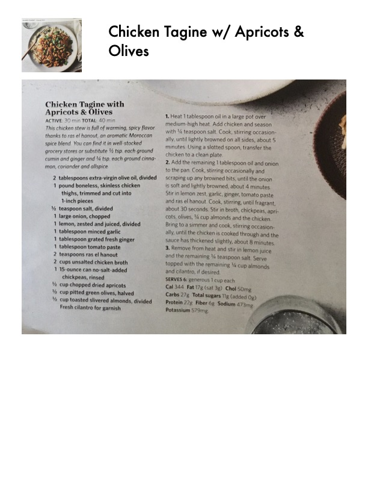

Chicken Tagine with Apricots & Olives

Original cookbook page 54
This chicken stew is full of warming, spicy flavor thanks to ras el hanout, an aromatic Moroccan spice blend. You can find it in well-stocked grocery stores or substitute 1/2 tsp. each ground cumin and ginger and 1/4 tsp. each ground cinnamon, coriander and allspice.
Prep: 30 minutes • Cook: 10 minutes • Total: 40 minutes
Ingredients
- 2 tablespoons extra-virgin olive oil, divided
- 1 pound boneless, skinless chicken thighs, trimmed and cut into 1-inch pieces
- 1/2 teaspoon salt, divided
- 1 large onion, chopped
- 1 lemon, zested and juiced, divided
- 1 tablespoon minced garlic
- 1 tablespoon grated fresh ginger
- 1 tablespoon tomato paste
- 2 teaspoons ras el hanout
- 2 cups unsalted chicken broth
- 1 15-ounce can no-salt-added chickpeas, rinsed
- 1/3 cup chopped dried apricots
- 1/3 cup pitted green olives, halved
- 1/2 cup toasted slivered almonds, divided
- Fresh cilantro for garnish
Instructions
- Heat 1 tablespoon oil in a large pot over medium-high heat. Add chicken and season with 1/4 teaspoon salt. Cook, stirring occasionally, until lightly browned on all sides, about 5 minutes. Using a slotted spoon, transfer the chicken to a clean plate.
- Add the remaining 1 tablespoon oil and onion to the pan. Cook, stirring occasionally and scraping up any browned bits, until the onion is soft and lightly browned, about 4 minutes. Stir in lemon zest, garlic, ginger, tomato paste and ras el hanout. Cook, stirring, until fragrant, about 30 seconds. Stir in broth, chickpeas, apricots, olives, 1/4 cup almonds and the chicken. Bring to a simmer and cook, stirring occasionally, until the chicken is cooked through and the sauce has thickened slightly, about 8 minutes.
- Remove from heat and stir in lemon juice and the remaining 1/4 teaspoon salt. Serve topped with the remaining 1/4 cup almonds and cilantro, if desired.
Recipe #54 from collection